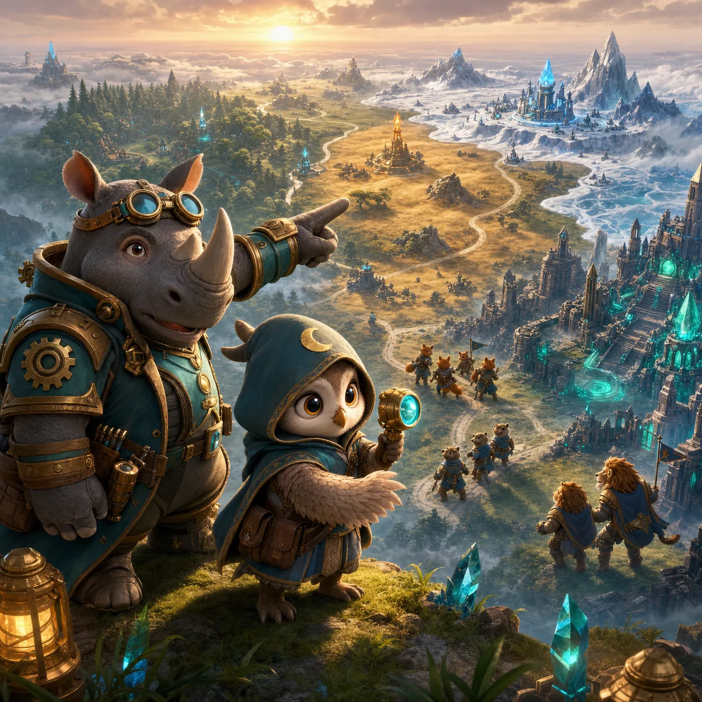

How to play
- Choose an adjacent territory.
- Scout its hidden modifier or save command points.
- Choose the formation that counters its defender, then march.

Scout adjacent regions, counter their defenders, and build a route to the crystal citadel.
Choose each neighbouring territory carefully. Scouting reveals danger, formations counter enemy roles, and captured sites provide the supplies needed for the next march.
Six frontier chapters add watchtowers, frozen supply routes, patrols, split paths, and crystal citadels. Permanent research remains in this browser.
No account is required. Campaign and research progress stay on this device.

Drag the frontier, then choose an unlocked region.

The current territory route, morale, supply, and turn progress will be lost. Permanent research stays saved.